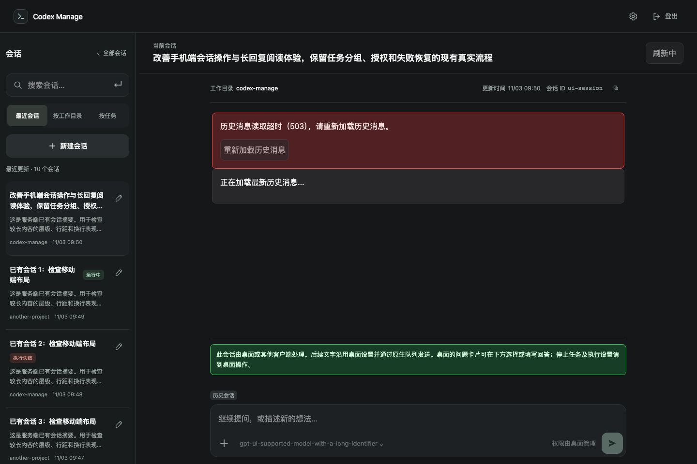
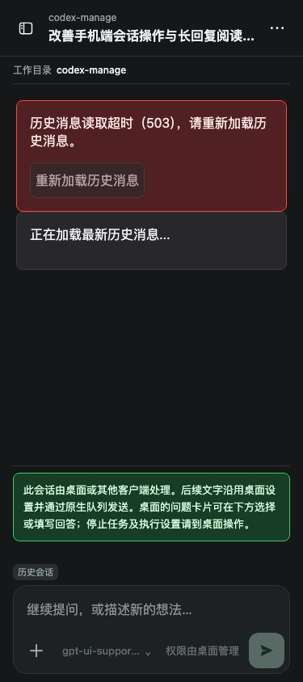

会话历史 503 排查与修复验收
2026-11-13 · 分支 codex/session-history-503 · 基线 b662b35
界面缺陷已修复并通过隔离测试，尚未合并发布。用户实际 503 未复现，不能认定故障已消除。
说明原因
已确认：首屏等待历史才能得到详情；历史区在详情缺失时缺少提示；后台刷新一开始清除旧错误，导致来不及截图。最近 20 轮原始 RPC 数据约 11 MB。
实际 503 原因待验证。本机多次请求均成功：元信息约 130ms，历史约 0.8～3 秒。默认 RPC 超时 60 秒，异常统一映射为 503，尚未得到用户失败请求的具体原因。
当前代码问题点
轮数分页仍读取全量条目。summary 对照虽更快，但会漏掉本次样本中的 97 条中间回复、63 个文件改动等内容，不能直接替换完整历史。实际网络、代理与后台超时需要对照失败响应定位。
代码错误位置
App.tsx 的详情加载和历史展示；SessionService.ts 的 thread/turns/list；CodexAppServerClient.ts 的超时；routes/sessions.ts 的 503 转换。
修改方案
元信息与历史独立读取；等待期间显示加载状态并保留桌面问题入口；保留错误到读取成功；失败刷新保留已有消息；增加失败请求的耗时和脱敏原因日志。
修改的代码点
| 项目 | 状态 | 验证 / 需要帮助 |
|---|
| 历史等待时展示元信息和桌面提问 | 已实现 | 桌面与 375px 专项通过 |
| 错误保留、中文提示、重试最新历史 | 已实现 | 自动重试中错误不消失，成功后清除 |
| 刷新失败保留已加载消息 | 已实现 | 专项通过 |
| 记录详情失败请求与原因 | 已实现 | 服务端记录请求 ID、会话、耗时和脱敏错误 |
| 消除本次实际 503 | 没实现 | 需要确认出错机器，以及会话名称或链接；无需截图 |
验证方式
192 项单元/集成、6 项浏览器专项、10 项审批与历史回归、类型检查和前后端构建均通过。未重启用户服务、未修改桌面、未执行 writer 操作。下面是隔离浏览器注入 503 的截图，用于验证界面状态，不是用户实际失败截图。

1440px：错误在后台重试期间保留。
375px：错误、重试入口和加载提示可见。实测记录 · 专项测试 · 回归测试 · 详细记录